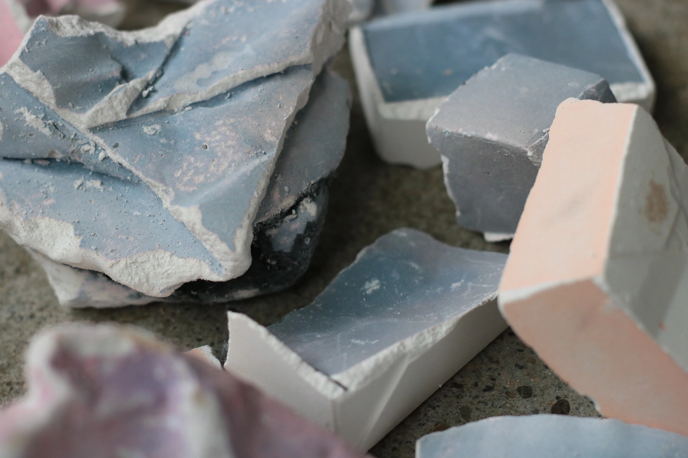

Tokyo Design Week 2025
March 15-22, 2025

Exhibition Setup & Installation


Featured Works


Exhibition Highlights


So Tanaka will be exhibiting new furniture pieces at Tokyo Design Week 2025, showcasing the latest collection of liminal objects and contemporary Japanese craft. This marks our third consecutive year participating in Japan's premier design event.
The exhibition will feature five new pieces from the ongoing exploration of transitional spaces and objects that exist between categories. The Transfer series, which examines the relationship between traditional Japanese joinery and contemporary form, will be displayed alongside new lighting installations that blur the boundaries between functional and sculptural objects.
Visitors will have the opportunity to experience these pieces in a specially designed installation that recreates the liminal quality central to the work. The booth design emphasizes natural materials and subtle lighting to create an atmosphere of quiet contemplation.
Exhibition Details:
Dates: March 15-22, 2025
Location: Tokyo Big Sight, Hall 3, Booth C-45
Hours: 10:00 AM - 6:00 PM daily
Admission: Free with registration
For more information about attending or scheduling a private viewing, please contact us.